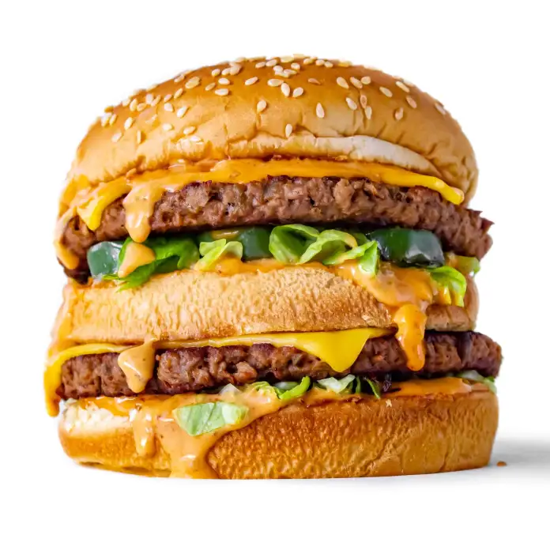

Spicy vegan big mac

Description
This mouthwateringly good-looking copycat burger is the ultimate vegan junk food recipe! Vegan cheese, vegan meat, vegan buns, and your own homemade spicy vegan Big Mac sauce – name a better combo, we’ll wait.
Ingredients
Patty
- 6 ounces of plant based meat, formed into 2 equal sized patties
- 2 slices vegan cheese
- 1/2 cup shredded lettuce
- 1 jalapeño, seeded and sliced
- 2 Tbsp chopped onion
- 2 Tbsp chopped cilantro (optional)
- 1 sesame bun + bottom half of another bun
- Chopped toreado or chipotle peppers (optional)
- Taco seasoning / cayenne / ghost pepper seasoning to taste
Spicy big mac sauce
- 1/3 cup vegan mayo
- 2 Tbsp ketchup
- 1 Tbsp mustard
- 1 Tbsp sweet relish
- 1 Tbsp diced chipotles in adobo
- Hot sauce of choice to taste
Steps
- Combine ingredients for Spicy Big Mac sauce and set aside.
- Chop your lettuce, onions and cilantro and set aside.
- Slice the jalapeño into rings.
- To prepare your middle bun, use a serrated knife and shave off just the bottom of the extra bottom bun.
- Make your burger mixture by combining your plant based meat with any seasonings or chopped peppers that you like.
- Press your burger patties so they match the circumference of your buns.
- Grill buns in a bit of oil or vegan butter until golden brown. Set aside.
- Grill jalapeño rings over medium heat for a few minutes until they are nice and charred. Set aside.
- Then over medium high heat, grill your burger patties for 3-4 minutes.
- After you flip the patties, add a slice of cheese to each, then add a few splashes of water to the pan, and cover to melt.
- Once Cheese is melted, assemble as follows; bottom bun, Spicy Big Mac Sauce, lettuce, patty w/ cheese, middle bun, more sauce, lettuce, cilantro, jalapeños, patty, onions, more sauce, top bun.
- ENJOY!
Back to overview